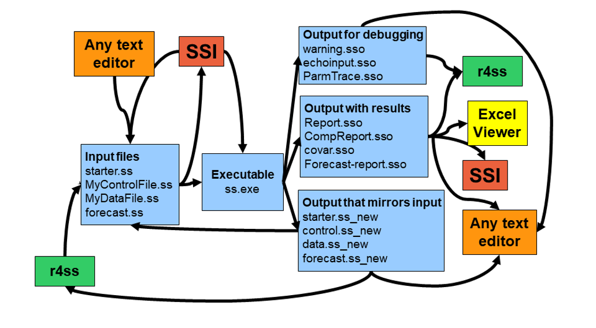

# Definir path donde SS exe esta ubicado:
path_to_exe = "C:/Users/moroncog/Documents/Mod_Avanzados_Evaluacion"
# Correr el modelo:
r4ss::run(dir = 'ss_models/simple', # ruta a la carpeta del modelo
exe = file.path(path_to_exe, 'ss3_win.exe'), # path and exe name
extras = '-nohess') # ADMB commands, ver SS manualModelos avanzados en evaluación de recursos pesqueros
Dr. Giancarlo M. Correa
Cousteau Consultant Group
Stock Synthesis
Stock Synthesis
Stock Synthesis Virtual Lab
Archivos de entrada
Son cuatro principales:
- starter.ss: nombres de archivos de datos y parámetros, y parámetros relacionados a la ejecución del modelo.
- forecast.ss: proyecciones y puntos de referencias.
- data.ss (ó data.dat): datos de entrada e información del stock y pesquerías.
- control.ss (ó control.ctl): valores iniciales de los parámetros del modelo.
Archivos de entrada
Importante
Los archivos de datos y control son los únicos que pueden cambiar de nombre (e.g., my_data.ss, my_control.ss). Si se cambian estos nombres, se debe especificar en starter.ss.
Archivos opcionales:
- ss.par: contiene parámetros estimados por SS. Por lo tanto, se crea después de ejecutar SS. Puede usarse como valores de parámetros iniciales y reemplazar a control.ss.
- wtatage.ss: contiene información de peso y/o fecundidad a la edad.
Archivos de salida
Se crean muchos archivos de salida después de ejecutar SS, pero lo más imporantes son:
- echoinput.sso: importante para hacer debugging. Nos muestra cómo SS va leyendo los archivos de entrada paso a paso.
- warning.sso: muestra adventencias
- Report.sso: guarda todos los parámetros estimados y cantidades calculadas (e.g. estimados de biomasa, F, SSB, etc).
Estructura de carpeta de trabajo
└───Mod_Avanzados_Evaluacion
├───ss_models
│ ├───sardine
│ │ ├───starter.ss
│ │ ├───forecast.ss
│ │ ├───data.ss
│ │ └───control.ss
│ ├───cod
│ │ ├───starter.ss
│ │ ├───forecast.ss
│ │ ├───data.ss
│ │ └───control.ss
│ └───simple
│ ├───starter.ss
│ ├───forecast.ss
│ ├───data.ss
│ └───control.ss
└───...Ejecutar un modelo en SS
Existen diferentes formas de hacerlo. Para este curso, usaremos la libería r4ss y el modelo de ejemplo que pueden encontrar en SS Virtual Lab.
Vamos a asumir que mi directorio de trabajo es Mod_Avanzados_Evaluacion, luego ejecutamos:
Cuando el modelo termine de ejecutarse, veremos que varios archivos de salida serán creados en ss_models/simple.
Obtener ayuda sobre SS
- Manual
- Preguntarle a Giancarlo
- Otros modelos implementados encontrados en reportes de evaluación (e.g., NOAA)
- Preguntar a otros usuarios
- Abrir un issue en el Github repository de SS
Archivo de entrada: starter.ss
starter.ss
- Es el primer archivo que SS lee al correr el modelo.
- Nos permite especificar el nombre de los archivos control y data.
- Controlar el nivel de detalle en los resultados obtenidos (mayor detalle puede conllevar un mayor tiempo de computación).
- Especificar información para Markov Chain runs.
- Alguna información relevante para el modelo (e.g., depletion denominator, summary biomass).
starter.ss
Explorar el archivo Excel
SS_330_starter_and_forecast_helper.xlsx(STARTERsheet) (obtenido de Stock Synthesis Virtual Lab).Explorar SS Manual (sección Starter File).
Archivo de entrada: data.ss
Preparación del modelo
Antes de preparar los datos para SS, debemos tener en claro algunas preguntas clave:
- Disponibilidad de datos (tipos, serie de tiempo, etc.)
- Máxima edad a modelar
- Mínima y máxima talla
- Mes de desove
- ¿Cuántas seasons quiero modelar?
- ¿Cuántas flotas quiero modelar?
Preparación del modelo
Recuerda
En SS, le decimos flotas a las pesquerías y a los índices de abundancia (e.g., surveys, CPUE, etc.).
- Unidades de captura e índices de abundancia (e.g., kg o número)
- Año de inicio y término del modelo
- ¿Uno o dos sexos?
- ¿Una ó múltiple áreas?
Preparación del modelo
Una vez tengo en claro las preguntas anteriores, recomiendo realizar una tabla resumen sobre las flotas que quiero modelar.
Ejemplo 1:
| Nombre | Index | Tipo | Unidades | Área |
|---|---|---|---|---|
| CercoIndus | 1 | Pesquería | Biomasa | 1 |
| SurveyAcus | 2 | Survey | Biomasa | 1 |
Preparación del modelo
Ejemplo 2:
| Nombre | Index | Tipo | Unidades | Área |
|---|---|---|---|---|
| CercoIndus | 1 | Pesquería | Biomasa | 1 |
| Arrastre | 2 | Pesquería | Biomasa | 1 |
| Artesanal | 3 | Pesquería | Número | 1 |
| SurveyAcus | 4 | Survey | Biomasa | 1 |
| SurveyAereo | 5 | Survey | Número | 1 |
Preparación del modelo
Respecto a la resolución temporal, SS siempre asume que el paso de tiempo es anual, pero podemos modelar seasons dentro de un año.
Por ejemplo:
- 1 season: Enero a diciembre
- 2 seasons: Enero a junio, julio a diciembre
- 4 seasons: Enero a marzo, abril a junio, julio a septiembre, octubre a diciembre
Preparación del modelo
Importante
La información de captura es especificada por cada season dentro de un año, por lo que modelar seasons es particularmente importante cuando la pesquería no opera homogeneamente a lo largo del año.
SS asume a la edad 0 como la primera edad. Individuos de edad 0 se les llama reclutas.
Una cohorte siempre avanza a la siguiente edad el 1 de enero, independientemente del mes de desove.
Desove sucede una vez al año, pero se puede modelar varios reclutamientos por año.
Captura
Se necesitan datos de captura y su error de observación (i.e., se asume que la captura no es totalmente precisa) ordenados por:
- Año
- Season
- Flota
Solo valores positivos de captura son necesarios (i.e., para observaciones faltantes se asume captura cero).
Unidades
Los datos deben ser reportados en estas unidades:
- Biomasa: toneladas métricas
- Peso corporal: kilogramos
- Talla: centímetros
- Número: miles de peces
Índices de abundancia
Los índices de abundancia y su error de observación son reportados para cada:
- Año
- Mes (independientemente si modelamos seasons)
- Flota
No es necesario introducir observaciones para todos los años.
Índices de abundancia
Existen otros tipos de surveys que podemos incluir:
- Spawning biomass
- Recruitment
- Depletion
- Survey deviation
- Recruitment deviation
Composición por tallas
Proporción en número para cada marca de clase. Para cada observación necesitamos la siguiente información:
- Año
- Mes (independientemente si modelamos seasons)
- Flota
- Sexo
- Partition: importante cuando modelamos descartes
- Nsamp: esfuerzo de muestreo (e.g., número de embarcaciones muestreadas). Ver Hulson et al. (2024).
Composición por edad
Proporción en número para cada edad. Para cada observación necesitamos la misma información reportada para los datos de composición por tallas, y además:
- Age Err: Matriz de error a utilizar
- Lbin lo y Lbin hi: Rango de tallas de donde esta observación ha sido tomada
Otros datos
También podemos incluir:
- Conditional age-at-length (CAAL)
- Descartes
- Peso o longitud media
- Peso o longitud media a la edad
- Datos ambientales
- Datos marcado-recaptura
data.ss
Explorar el archivo Excel
SS_330_data_helper.xlsx(Data_typicalsheet) (obtenido de Stock Synthesis Virtual Lab).Explorar SS Manual (sección Data File).
Laboratorio
Preparación de datos
Preparar los datos en formato para SS.
Referencias

Hulson, P.-J.F., Williams, B.C., Bryan, M.D., Conner, J., and Siskey, M.R. 2024. Reductions in sampling effort for fishery-independent age and length composition: Balancing sampling efficiency, data uncertainty, and workforce health. Canadian Journal of Fisheries and Aquatic Sciences 81: 63–78. Canadian Science Publishing. doi:10.1139/cjfas-2023-0164.